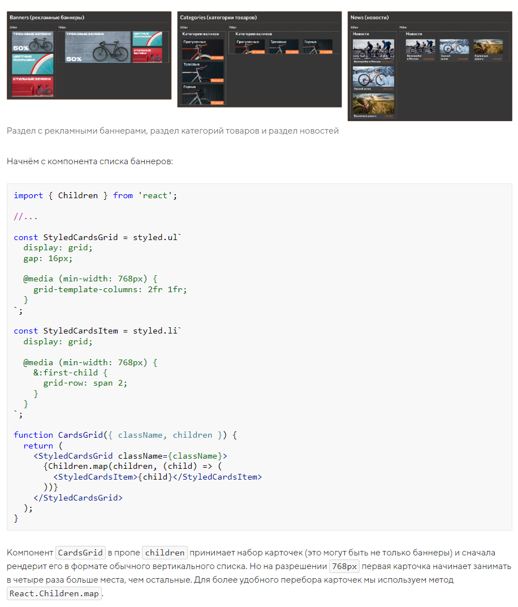

Немного повременим с реализацией разделов главной страницы и первым делом добавим все необходимые вспомогательные компоненты. Эти компоненты очень пригодятся при добавлении раздела с рекламными баннерами, раздела категорий товаров и раздела новостей:
